地政学
ロゾーは東カリブの小国ドミニカ国の首都です。マルティニーク、グアドループ、セントルシアに近く、海上交通、災害支援、英連邦、フランス語圏との関係が、港と官庁に集まります。島の外交は首都の日常へ届きます。
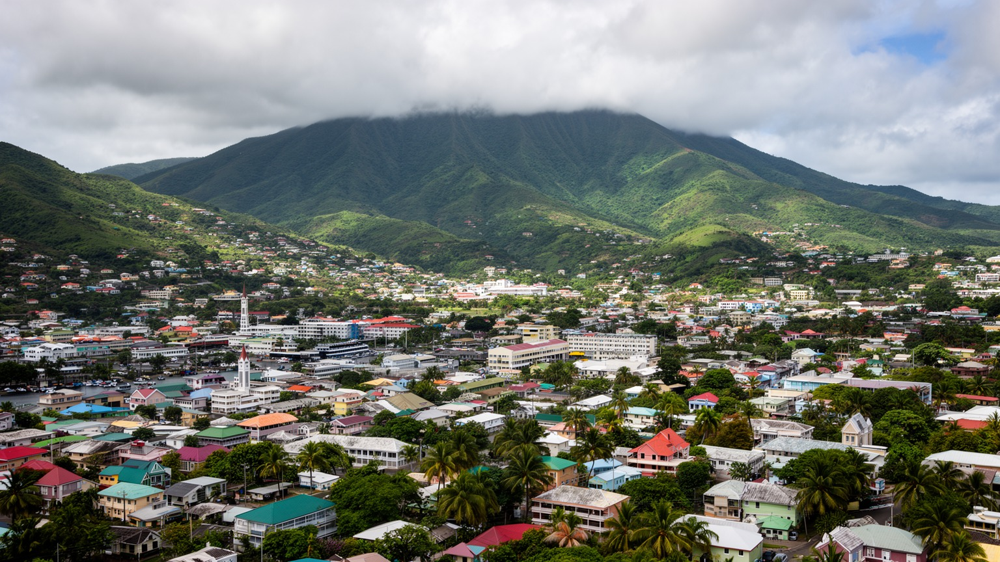
🇩🇲 ドミニカ国 / カリブ海 / World City Atlas
カリブ海へ開く小さな首都で、山、川、港、市場、政府機関、クルーズ観光が狭い谷口に集まります。自然島の美しさと、ハリケーンに備える生活が重なる都市です。
都市の骨格
ロゾーはドミニカ島西岸の小さな港町です。背後の急な山、ロゾー川、植物園、官庁、市場、フェリーとクルーズの埠頭が近接し、歩ける距離に国家と日常が重なります。
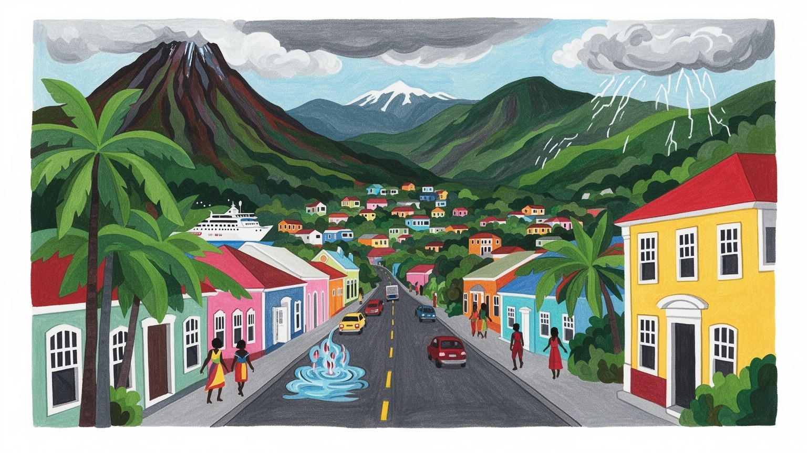
ロゾーは東カリブの小国ドミニカ国の首都です。マルティニーク、グアドループ、セントルシアに近く、海上交通、災害支援、英連邦、フランス語圏との関係が、港と官庁に集まります。島の外交は首都の日常へ届きます。
行政、港湾、観光、小売、農産物流通、教育、医療が雇用を支えます。大工業都市ではありませんが、クルーズ客、フェリー、バナナや根菜、建設、復興事業が家計を動かします。若者は島内の仕事と移住の選択を見ています。
ロゾーでは英語、クレオール語、カリブ先住民の記憶、カトリックとプロテスタント、音楽、カーニバル、食が重なります。教会、学校、市場、家族行事が近く、植民地期の街並みも生活文化の一部として残っています。
観光客は植物園、旧市街、市場、温泉、滝、山道へ向かいます。住民には住宅、物価、道路、医療、学校、ハリケーンへの備えが身近です。自然島の魅力と、災害に強い日常を作る努力が同じ道に並んでいます。毎日。
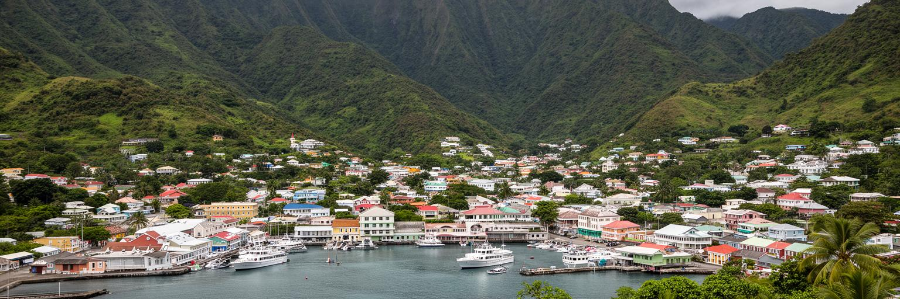
ロゾーを理解する入口は、首都でありながら広い平野を持たないことです。街はカリブ海へ注ぐロゾー川の河口近くにあり、背後には急な山地と熱帯雨林が迫ります。官庁、市場、港、植物園、学校、教会、バスターミナルのような機能が、歩ける距離に詰め込まれています。海岸へ向かう道は観光客と荷物を受け入れ、山へ向かう道は村、農地、温泉、滝、内陸の集落へつながります。土地が限られるため、住宅は坂や川沿いへ広がり、雨の日の排水、土砂、橋、道路幅が都市の安全を左右します。海と山が近いことは景観の魅力ですが、災害時には水と風の通り道にもなります。ロゾーの都市計画は、大きな区画整理よりも、狭い土地で公共施設、住宅、観光、商業、避難経路をどう両立させるかという調整です。首都の中心部を歩くと、国家の機関が観光の埠頭や露店のすぐ近くにあることが分かります。その近さは便利さであると同時に、混雑や災害時の脆さにもなります。小さな首都を読むには、面積の小ささを弱点だけでなく、生活と行政が近距離で反応する条件として見る必要があります。川沿いの護岸、橋の位置、海岸道路の幅、山側の住宅地は、地図では小さく見えても暮らしの安心を決めます。狭い谷口に首都機能が集まるからこそ、一つの道路工事や排水整備が多くの人に影響します。坂の高さも生活条件です。
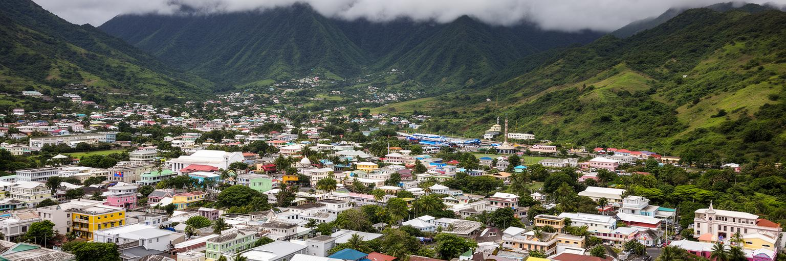
ロゾーはドミニカ国の首都として、政府、議会、裁判、外交、報道、公共事業の判断が集まる場所です。人口規模は小さくても、首都の決定は島全体の道路、学校、病院、港、災害復旧、観光許可、農業支援へ広がります。小国では行政機関と住民の距離が近く、政策の成功や遅れが日常の会話にすぐ現れます。ハリケーン後の復興、住宅再建、国際援助の使い方、気候変動対策、財政の優先順位は、ロゾーの官庁街だけでなく、各地の村や農家にも影響します。英連邦の制度、地域機関、周辺島しょ国、援助国との関係も、首都の仕事を形作ります。首都であることは大きな権力を誇示するより、限られた予算と人材をどこへ配るかを決める責任として現れます。住民にとって重要なのは、行政窓口が使いやすく、災害時に情報が届き、復旧が公平に進むことです。ロゾーの政治性は、広場の儀式だけでなく、雨で壊れた道路を直す順番、学校や診療所の維持、観光収入を地域へ返す仕組みに表れます。小さな首都ほど、制度の信頼は日々の対応で測られます。さらに、移民、教育、保健、エネルギーの政策は、島外へ出る若者や帰国する家族の判断にも関わります。政治は遠い議場の話ではなく、港が動き、電話が通じ、避難所が開くかという実感で評価されます。公務員の顔が見える距離も、行政への期待と厳しい目を強めます。
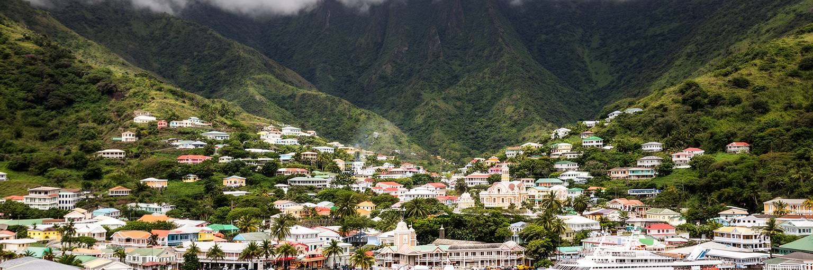
ロゾーの港は、島の経済と生活を外へ開く玄関です。食料、燃料、建材、日用品、観光客、フェリーの旅客、援助物資は海から入り、船の遅れや燃料価格の変化は市場の値段や工事の進み方へ影響します。ドミニカ国は大規模な製造業を持つ島ではないため、輸入品と港湾機能への依存は大きくなります。クルーズ船が着く日は中心部の人の流れが変わり、ガイド、タクシー、土産物店、飲食店、市場の売り手に機会が生まれます。一方で、短時間の寄港だけでは、収入が一部に偏りやすく、道路混雑や廃棄物の負担も増えます。フェリーは近隣島との家族訪問、商い、教育、医療の移動を支え、カリブ海の島々を生活圏として結びます。港の周辺では通関、荷役、小売、両替、案内、警備が小さな雇用の連鎖を作ります。ロゾーを港町として読むと、カリブ海が美しい背景ではなく、物価、観光、移住、災害支援を運ぶ実際の基盤であることが分かります。港の強さは、観光の歓迎だけでなく、非常時に島へ物資を届ける力としても問われます。海の玄関が止まると、首都の暮らしもすぐ不安定になります。港前の混雑、歩行者の安全、税関手続き、クルーズ客の導線は、都市の印象を左右します。貨物と観光を同じ狭い海岸で扱うため、港湾整備は経済政策であり、生活道路を守る都市政策でもあります。海風は街の記憶にも残ります。
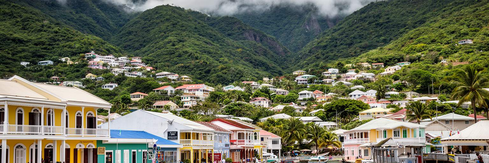
ロゾーの文化は、英語を公用語とする国家の顔と、クレオール語、カリブ先住民の記憶、アフリカ系の音楽、フランス植民地期の影響、教会の生活が重なって作られます。中心部の古い木造建築や石造りの建物、バルコニー、教会、市場の会話には、カリブ海の移動史が残ります。カトリックとプロテスタントの教会は、礼拝だけでなく教育、慈善、葬儀、家族行事、地域の相談の場として働きます。カーニバルやクレオール音楽は観光の見どころですが、住民にとっては世代を結び、移住した家族を呼び戻す時間でもあります。食卓には根菜、魚、スパイス、ココナツ、山の作物が並び、港から来る商品と島の農産物が混ざります。文化を単なる色彩や祭りとして見ると、植民地支配、奴隷制の歴史、土地と労働の記憶は見えにくくなります。ロゾーの文化は、苦難を受け止めながら言葉、歌、信仰、料理で共同体を保つ実践です。観光客が街を歩く時も、写真映えする建物だけでなく、挨拶の仕方、教会の鐘、市場の声、学校帰りの子どもたちに目を向けると、首都の厚みが見えます。小さな街の文化は、日常の反復の中で強く残ります。祝祭の日には、島外に暮らす家族も戻り、街の音と食卓が一気に広がります。普段は静かな路地も、音楽と行進と礼拝によって、記憶を共有する公共空間へ変わります。そこに都市の温度があります。
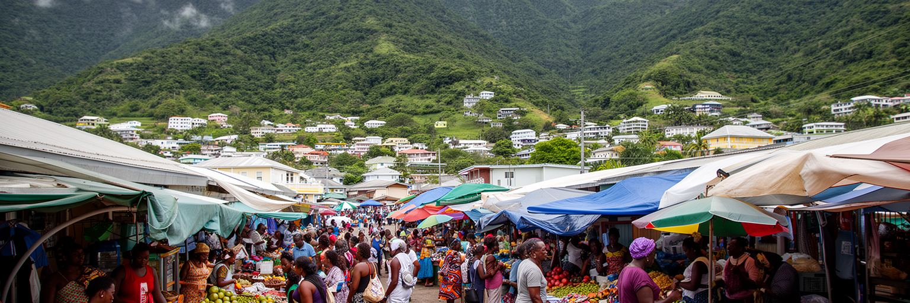
ロゾーの暮らしを支えるのは、官庁や港だけではありません。市場、露店、ミニバス、タクシー、修理店、学校、診療所、飲食店、建設現場の小さな仕事が、家計を毎日動かします。市場には野菜、根菜、果物、魚、香辛料、衣類、携帯用品、観光客向けの品が並び、島内の農村と港から来る輸入品が同じ場所で売られます。農産物の価格は天候、道路、燃料、輸入品の値段に左右され、家庭の食費へすぐ響きます。女性の商い、家族労働、臨時の仕事、海外にいる親族からの支援は、公式統計に出にくい生活の基盤です。小さな島では仕事の選択肢が限られ、若者は公務、観光、建設、サービス業、海外移住の間で将来を考えます。観光客が増える日は売り上げが伸びますが、天候や寄港予定に左右されるため、安定した収入とは限りません。ロゾーの市場経済を見ることは、国内総生産の数字だけでは分からない工夫を見ることです。誰が朝早く仕入れ、誰が信用で売り、誰が子どもを見ながら店を開くのかまで見れば、首都の日常経済が具体的に見えます。小さな取引の積み重ねが、災害後の回復力も支えています。価格交渉、少量販売、近所へのつけ払いは、収入が不安定な家計の調整装置です。市場は商品を買う場所であると同時に、仕事、情報、親族の近況、災害後の助け合いが交差する社会の広場でもあります。
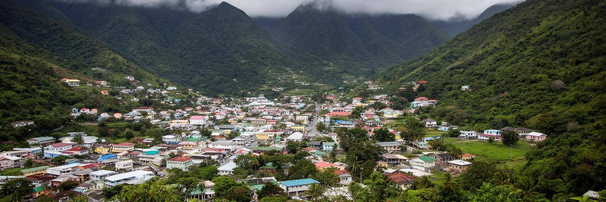
ロゾーは、ドミニカ国が掲げる自然島の観光を体験する入口です。街の中心から植物園、モーン・ブルース、温泉、滝、渓谷、熱帯雨林、山道へ向かう距離が短く、短い滞在でも島の地形を感じられます。観光はホテル、ゲストハウス、ガイド、タクシー、飲食、手工芸、農産物販売に収入をもたらしますが、自然を資源にするほど、保全と混雑管理が重要になります。温泉や滝では安全な道、案内、廃棄物管理、水質保全が必要です。クルーズ客は短時間で名所を巡るため、地域に残る収入を増やすには、地元ガイド、家族経営の店、文化体験、農村との連携が欠かせません。自然観光は美しい景色を消費するだけではなく、雨、地熱、森、川が都市の水と災害にどう関わるかを学ぶ機会にもなります。観光客がロゾーを拠点にすると、首都の市場や教会、古い街並みも旅の一部になります。自然の近さは大きな魅力ですが、同時に事故や天候急変への注意も求めます。ロゾーの観光の価値は、海辺のリゾートだけでは得られない、山と街と暮らしの近さにあります。その近さを守ることが、観光収入を長く続ける条件になります。案内板、救助体制、ガイドの訓練、地域に利益が残る料金設計が整えば、観光は環境を壊す圧力ではなく、森と水を守る理由になります。小さな首都だからこそ、訪問者の振る舞いも地域に直接響きます。
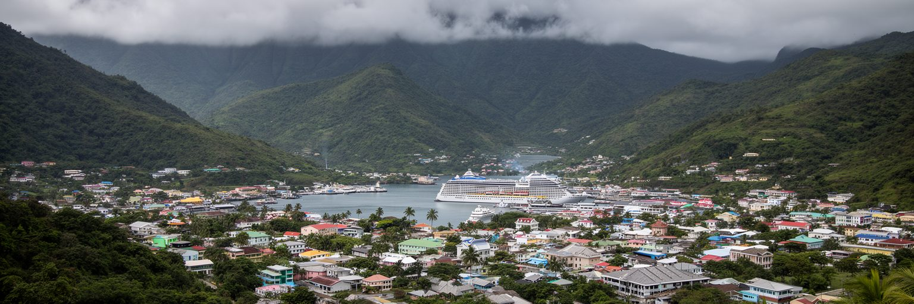
ロゾーの近年を語るうえで、ハリケーンと復興は避けられません。強い風、豪雨、土砂、河川の増水、海岸の波は、住宅、道路、電力、通信、病院、学校、港に大きな被害をもたらします。ドミニカ国は気候変動への強靱化を国家目標として掲げ、復旧だけでなく、より強い住宅、避難、排水、道路、電力網を作る必要に迫られています。ロゾーでは、官庁、港、商店、住宅が狭い範囲に集まるため、一つの災害が行政、物資供給、観光、家計を同時に揺らします。復興資金や国際支援は重要ですが、実際に生活を戻すには、屋根の修理、通学路の再開、薬の入手、店の再開、親族の支えが欠かせません。災害は自然現象だけではなく、貧困、住宅の質、情報へのアクセス、保険、行政手続きの差を浮き彫りにします。安全な場所に移れない人ほど被害を受けやすく、復旧にも時間がかかります。ロゾーの復興を読むことは、小さな島国が地球規模の気候リスクを最前線で引き受けている現実を見ることです。美しい雨林と山は都市の誇りですが、その水と風に備える制度がなければ、暮らしは守れません。防災は特別な日ではなく、毎日の建築、排水、教育、情報共有の問題です。避難所の位置、発電機、携帯通信、薬の備蓄、近所の高齢者を誰が助けるかまで決めておくことが、被害の差を小さくします。強靱化は大きな工事だけでなく、家庭と地域の準備から始まります。
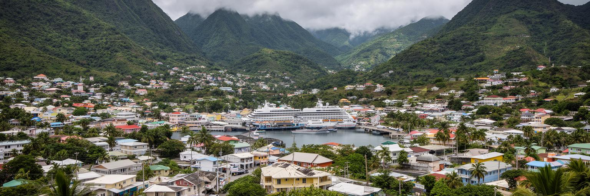
ロゾーの日常は、坂道、狭い街路、川沿いの道、港前の交通、市場の混雑、学校の登下校、官庁への用事の中にあります。小さな首都は歩いて回りやすい一方、土地が限られるため、住宅の密度、家賃、駐車、排水、ゴミ処理、歩道、バスの乗り場が暮らしの質を左右します。古い建物は街の魅力を作りますが、ハリケーンや豪雨に耐える補修が必要です。低所得の家族ほど、安全な住宅へ移る選択肢が少なく、災害後の修理費も重くなります。医療や行政機能が首都に集まるため、島内の他地域から来る人もロゾーのサービスを使います。これにより、中心部の交通、待ち時間、宿泊、食事の需要が増えます。住民にとって重要なのは、観光客向けの見栄えだけではなく、夜に安心して歩ける道、暑さを避ける木陰、雨の日でも使える歩道、清潔な排水路、分かりやすい窓口です。小さな都市では、ひとつの橋やバス路線が生活の可能性を大きく変えます。ロゾーの都市サービスを読むと、首都機能は建物の数ではなく、毎日の用事をどれだけ無理なく済ませられるかで評価されることが分かります。強い都市は、観光の表通りだけでなく、住民の裏通りも壊れにくくします。特に雨の日には、排水溝の詰まりや歩道の段差が高齢者や子どもの移動を妨げます。公共トイレ、街灯、バス待ちの屋根のような小さな設備も、首都を使いやすくする大切な基盤です。
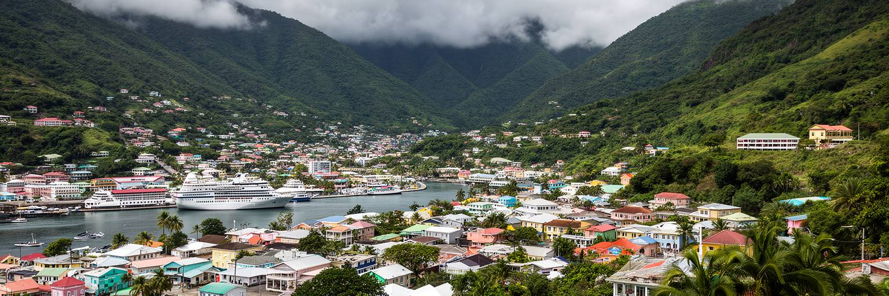
ロゾーには学校、公共機関、病院、図書館、教会、通信サービスが集まり、島の若者に学びと仕事の機会を与えます。しかし人口の小さな島では、卒業後に選べる職種が限られ、観光、行政、建設、医療、教育、農業関連、海外移住の間で進路を考える人が多くなります。若者にとって首都は、友人と出会い、情報を得て、資格や仕事を探す場所です。同時に、家賃、交通費、学費、通信費、家族の期待は重い負担になります。デジタル技術や遠隔業務は新しい可能性を開きますが、安定した電力、通信、職業訓練、起業資金がなければ十分に広がりません。女性の進学や就労には、安全な移動、育児、家族内の役割分担も関わります。若い人が島に残るか、戻るかを選べる都市にするには、観光だけに頼らない仕事、災害に強いインフラ、透明な行政手続き、地域文化を生かす産業が必要です。ロゾーの若者を見ることは、島国の将来を抽象的に語ることではありません。学校から職場へ移る道があるか、災害後も学びを続けられるか、自分の言葉と文化に誇りを持ちながら世界とつながれるかを問うことです。小さな首都の未来は、若者の選択肢の広さに表れます。スポーツ、音楽、祭り、環境教育は、若い人が地域に関わる入口にもなります。学んだ技能を観光、農業、福祉、デジタルサービスへ結びつける支援があれば、島外へ出ることだけが成功ではなくなります。
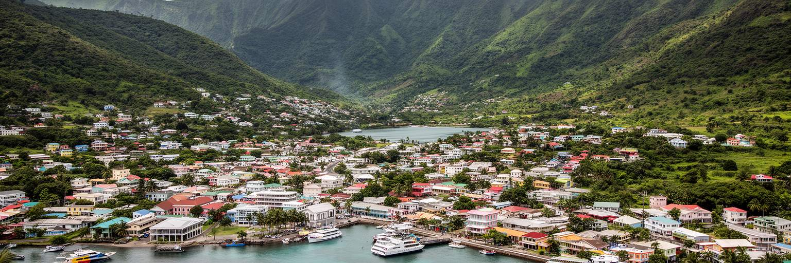
ロゾーはドミニカ国の首都ですが、島全体を代表する時には、各地域の歴史と声をどう扱うかが問われます。東部にはカリナゴの人々の領域があり、先住民の文化、土地、観光、教育、政治的代表は、首都の国家物語に欠かせない要素です。山地と深い谷が多いドミニカでは、地域間の移動に時間がかかり、道路の状態や天候が医療、学校、仕事、行政手続きへのアクセスを左右します。ロゾーに機能が集中するほど、遠い集落の人にとっては交通費や時間が負担になります。首都が本当に島全体の中心になるには、港や官庁だけでなく、周辺地域の産物、文化、課題を受け止める場である必要があります。カリナゴ文化は観光向けの展示だけではなく、言語、工芸、土地利用、環境知識、自治の問題として理解する必要があります。島内の農村や漁村も、ロゾーの市場と病院と学校を使いながら、独自の生活を保っています。首都を読む時に地方を背景へ押し込めると、ドミニカ国の複雑さは見えません。ロゾーは島の玄関であると同時に、山の向こうに暮らす人々の要求を聞く場所でもあります。その関係を丁寧に見ることが、首都の公平さを測る手がかりになります。観光パンフレットに出る島の自然も、誰の土地で、誰が案内し、誰が収益を得るのかを考える必要があります。首都が地方の声を可視化できれば、自然保護と地域の尊厳を同時に支えられます。
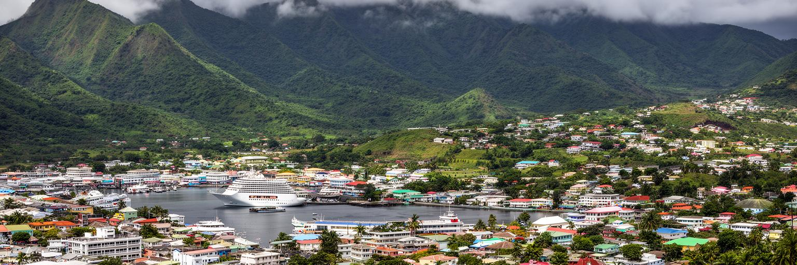
ロゾーは世界の大都市のような人口や高層ビルを持ちません。それでも、世界都市を読むうえで重要な論点を凝縮しています。気候変動にさらされる島国の首都、海上交通に依存する港、自然観光と保全の両立、植民地史とクレオール文化、先住民の記憶、若者の移住、国際援助、災害復興が、狭い市街地に重なります。経済規模だけで都市の重要性を測ると、ロゾーの意味は小さく見えます。しかし、強いハリケーンの後にどう行政を動かし、港を再開し、住宅を直し、観光を戻し、学校を続けるかは、世界中の沿岸都市が学ぶ課題です。市場では島内の農産物と輸入品が並び、港では観光と物資が交差し、教会と家族は共同体を支えます。ロゾーを読むことは、小さな首都が地球規模の問題をどのように生活の単位へ引き受けているかを見ることです。山と海の近さは美しさであり、リスクでもあります。だからこそ、この街の価値は量の大きさではなく、自然、国家、文化、家計を近い距離でつなぐ力にあります。ロゾーは、世界都市の別の尺度を静かに示す島の首都です。巨大な市場や金融センターではなくても、ここでは気候、観光、先住民の権利、港湾、公共サービスが同じ数キロの中で交渉されます。その密度は、小都市が世界課題を映す力をはっきり示しています。小ささを通じて世界を見る都市なのです。